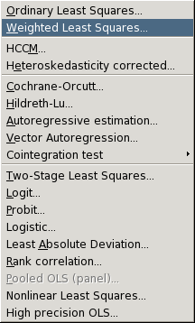
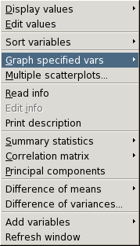
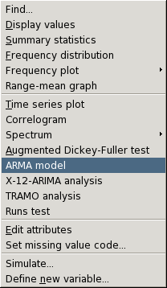
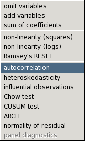

Running on the Gnome 2 desktop.
The main window, with details of the current data set:
Model output window:
Database browser window, showing Federal Reserve Board interest rate data:
The built-in data editor:
The help window:
A plot window, showing a test for Normality of a data series:
Various menus:
| Model menu: choice of estimators |  |
| Data menu: Operations pertaining to the data set as a whole |  |
| Variable menu: Operations on individual variables |  |
| Tests menu: available after estimating a model |  |
Return to gretl main page.